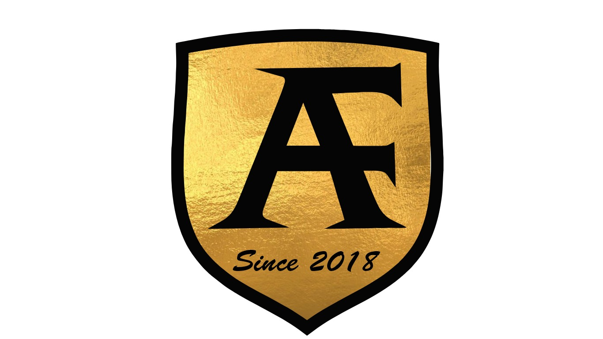

Alinhamento e Balanceamento
Mais estabilidade, direção firme e desgaste uniforme dos pneus para você rodar com segurança.
A AF André Auto Center entrega alinhamento, balanceamento, troca de óleo, filtros, freios, suspensão, pneus e manutenção preventiva com atendimento qualificado para os mais diversos modelos de veículos.
Alinhamento, pneus, revisão e manutenção com padrão premium.
Serviços pensados para segurança, desempenho, conforto e durabilidade no dia a dia.
Mais estabilidade, direção firme e desgaste uniforme dos pneus para você rodar com segurança.
Lubrificação correta e revisão dos filtros para preservar o motor e evitar desgaste precoce.
Diagnóstico e manutenção dos principais sistemas que garantem segurança e conforto ao dirigir.
Atendimento para pneus e rodagem com foco em estabilidade, aderência e melhor rendimento.
Revisões completas para antecipar falhas, evitar surpresas e manter o carro sempre pronto.
Um novo conceito em auto center, com equipe preparada para orientar com clareza e fidelizar pelo serviço bem-feito.
Seu contato vira orçamento rápido e atendimento objetivo, do jeito que o cliente de oficina precisa.
Conte qual serviço precisa ou o sintoma que seu veículo está apresentando.
Nossa equipe retorna com direcionamento inicial e melhor forma de atendimento.
Você chega à oficina com atendimento preparado para agilizar o serviço.

A AF André Auto Center nasceu da experiência do proprietário André, profissional com mais de 25 anos de atuação no setor automotivo. Desde 2018, a empresa vem se consolidando como referência de confiança, preparo técnico e atendimento de qualidade.
Nossa equipe é formada por profissionais qualificados para atender os mais diversos modelos de veículos, sempre com foco em segurança, desempenho e manutenção preventiva. Aqui, cada serviço é executado com atenção aos detalhes e compromisso com a satisfação do cliente.
Mais do que serviço, entregamos confiança para quem quer manter o veículo em dia.
Experiência prática acumulada em mais de 25 anos no setor automotivo.
Profissionais preparados para atender diferentes marcas e modelos com segurança.
Foco em resolver a necessidade do cliente com clareza e manutenção bem executada.
Relacionamento próximo para transformar primeira visita em cliente recorrente.
O foco principal está na região central de Campo Grande, com atuação para toda Campo Grande e presença estratégica para clientes de Mato Grosso do Sul.
Informações rápidas para quem quer entender como funciona o atendimento.
Atuamos com alinhamento, balanceamento, troca de óleo e filtros, suspensão, pneus, freios e manutenção preventiva em geral.
De segunda a sexta das 07h30 às 18h00 e aos sábados das 07h30 às 12h00.
Você pode falar direto pelo WhatsApp ou preencher o formulário para enviar sua solicitação com os dados do veículo.
Se você procura oficina, centro automotivo, troca de óleo, pneus, freios, alinhamento ou revisão de veículo em Campo Grande, fale com a nossa equipe.
Preencha e envie sua mensagem direto para o WhatsApp da oficina.